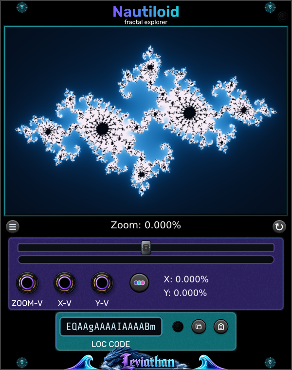

Fractal display
Large upper display
Left-drag to pan. Use the mouse wheel to zoom around the cursor; holding Rack’s Ctrl/Cmd modifier passes wheel zoom through. Release the gesture to request a settled view.
Leviathan for VCV Rack 2 · Open Source
A 20 HP fractal explorer and left-side source companion for Iris, with hands-on navigation, motion CV, and location recall.

A source you can explore
Nautiloid generates a fractal field that you can pan, zoom, recolor, and revisit. Place it immediately to the left of Iris to turn the view into a wavetable source. Nautiloid provides the field; Iris converts its horizontal rows into cycles and supplies the audio or LFO outputs.
Nautiloid has three motion-CV inputs and no outputs. It can display a fractal without Iris, but an attached oscillator is what makes the Iris workflow audible.
First connected patch
The top-edge link indicators show an amber connection while the Iris source is pending or not selected, and green when the source has been accepted. The explorer display can update before the corresponding Iris table has finished rebuilding.
Panel breakdown
Click a numbered marker to jump to its description. The two views separate navigation from motion inputs, location recall, and the Iris link.
Large upper display
Left-drag to pan. Use the mouse wheel to zoom around the cursor; holding Rack’s Ctrl/Cmd modifier passes wheel zoom through. Release the gesture to request a settled view.
Three-line button below the display
Select one of 14 fractal types. Changing the type resets its center and zoom.
Circular-arrow button at the right
Returns zoom and center coordinates to their initial values. Keeps the selected fractal and palette.
Wide slider below the readout
Hold and move left to zoom out or right to zoom in. Farther from center moves faster. Releasing recenters it and stops manual zoom; CV can continue moving the view.
Percentage readout and thin bar below the slider
The percentage reports position in the zoom range, rather than optical magnification. The thin bar shows zoom amount, separately from the slider’s rate.
Colored dots beside the motion inputs
Cycles Prism, Abyss, Ember, Amethyst, Emerald, and Inverted. The palette also changes the field sent to Iris, so it can change the sound.
Right side of the purple control area
Displays the normalized center coordinates as percentages. These are position readouts; the X-V and Y-V inputs control velocity.
All three jacks are inputs. Nautiloid sends its source through the adjacent Iris connection and has no output jacks.
Code display near the bottom
Represents fractal type, zoom, and center coordinates. The code does not include the palette or Iris settings.
Small indicator beside LOC CODE
Shows whether the last location-code input was valid. Use the paste button to load a code from the clipboard.
First clipboard button
Copies the current 16-character location code to the clipboard. Save it in a note to revisit this region.
Second clipboard button
Loads a code from the clipboard and updates the validity indicator. Stop motion CV before recall if you want the view to remain still.
Top-right edge
Amber indicates an attached Iris whose source is pending or not selected; green indicates an accepted source. Keep Iris immediately to Nautiloid’s right.
Leftmost motion input
Bipolar zoom-rate CV. Positive zooms in; negative zooms out. Adds to the manual slider rate. ±10 V corresponds to the supported full rate.
Middle motion input
Horizontal center velocity. Positive increases X; negative decreases X. Zero stops this contribution, and ±10 V gives full rate.
Rightmost motion input
Vertical center velocity. Positive increases Y; negative decreases Y. Zero stops this contribution, and ±10 V gives full rate.
Fractals and colors
The menu button below the display opens Fractals. It offers Mandelbrot, Multibrot, Julia, Multijulia, Phoenix Julia, Manowar, Burning Ship, Celtic, Buffalo, Tricorn, Spider, Barnsley, Newton, and Nova. Choosing a different fractal resets its zoom and center to the initial view.
Click the colored-dots button to cycle Prism, Abyss, Ember, Amethyst, Emerald, and Inverted. The palette applies to the displayed field and to the source sent to Iris.
Motion CV
| Input | Behavior |
|---|---|
| ZOOM-V | Bipolar zoom-rate CV. Positive voltage zooms in, negative voltage zooms out. Adds to the manual slider’s rate; the combined rate is limited to the supported range. |
| X-V | Bipolar horizontal center velocity. Positive voltage increases the X center coordinate; negative voltage decreases it. |
| Y-V | Bipolar vertical center velocity. Positive voltage increases the Y center coordinate; negative voltage decreases it. |
Each input uses its first channel, with ±10 V corresponding to the full supported rate and voltages beyond that clamped. Rate is shaped nonlinearly for finer slow movement near zero, with a small dead zone. Zero voltage stops that contribution rather than returning the view to its origin.
These are rate controls, so a steady voltage keeps moving the view until a limit is reached. X/Y motion is scaled to the current view span: at deeper zoom, the same CV moves through a smaller region of fractal coordinates.
Motion and render requests are serviced through the UI. Use slow CV for exploration; these inputs are not an audio-rate synthesis path. Patch audio-rate or note modulation into Iris instead. Stop or disconnect motion CV before trying to recall a stationary location.
Save and share locations
The LOC CODE display represents the selected fractal, zoom, and center coordinates as a compact 16-character location code. Use the copy button to put it on the clipboard and the paste button to load one from the clipboard. The adjacent indicator shows whether the last input was valid.
A location code contains geometry settings. It does not contain the palette, Iris COLOR, conversion settings, scan position, oscillator pitch, or patch cables. For the same sound, preserve those settings as well. The code encodes coordinates at finite precision, so it is a compact recall point rather than a lossless image archive.
Saving the Rack patch stores Nautiloid’s fractal type, zoom, center coordinates, palette, and rendering settings. Save Iris alongside it to preserve the connected synthesis setup.
Rendering and the Iris link
The large explorer display and the source prepared for Iris have different jobs. The display can respond quickly while navigation is in progress; Iris receives a separately prepared source and rebuilds its table asynchronously. The picture and sound can briefly be at different stages of the same gesture.
Once the new table is ready, Iris crossfades into it. Fast navigation can replace pending work with a newer request. For deliberate sound design, move to a region, release the controls, and listen after the source has settled.
| Control | Function |
|---|---|
| GPU Rendering → Deep precision at extreme zoom (experimental) | Enables the experimental higher-precision GPU path for extreme zoom. Off by default. It concerns the explorer’s GPU display; the Iris source has a separate generation path. Use it if fine detail becomes unstable at very deep zoom and compare the result on your graphics hardware. |
Additional logging and GPU-preview controls appear only when developer debugging is enabled. They are not required for normal patching.
Loading an image in Iris selects that file source. To restore the fractal feed, choose Source → Nautiloid on Iris. An attached companion does not require you to discard an image you deliberately selected.
The Iris workflow requires direct adjacency: Nautiloid on the left, Iris on the right, touching in the same row. Another module or a gap breaks that connection.
Exploration patches
Select Mandelbrot or Burning Ship. Wheel-zoom into a detailed edge, release the gesture, then slowly turn Iris SCAN. Copy the location before moving on.
A single region can supply a bank of related waveforms; scan it before searching for another one.
Send a small, slow bipolar CV to X-V or Y-V. Keep Iris pitch steady and scan depth modest. Stop the CV to hold a promising region.
The source evolves as the view moves. Because the input controls velocity, offset and waveform symmetry influence the travel path.
Recall one location. Cycle Nautiloid palettes, then compare Iris All, Red, Green, and Blue. Save separate patch variations for useful combinations.
The same geometry can produce different cycles through its color mapping.
Troubleshooting
Use Iris’s source button and select Nautiloid. It is hidden from the browser in the current source manifest and is spawned through this workflow.
Nautiloid has no audio outputs. Connect Iris OUT or Q through your audio chain. Confirm direct adjacency and select Source → Nautiloid on Iris.
Release stops manual zoom, but connected CV can continue to drive zoom or X/Y motion. Return those signals to zero or disconnect them. A DC offset is a continuous velocity command.
Stop motion CV, verify the valid-code indicator, and restore the palette and Iris settings too. Location codes contain fractal geometry, not a complete patch.
Allow the view to settle. Try the experimental deep-precision GPU option for extreme zoom detail. Rendering depends on the fractal, zoom, and graphics hardware; the Iris source may finish at a different time from the display.
Select Source → Nautiloid on Iris. File-source mode is intentional and can be preserved when a patch is restored.
Reference
VCV Rack 2 · 20 HP · fractal explorer / Iris source companion · three monophonic motion inputs · no outputs · 14 fractal modes · six palettes.
Checked against the local Nautiloid engine, display gestures, zoom/CV handler, location-code format, Iris source handoff, and plugin manifest. Appearance and available behavior can differ between releases.